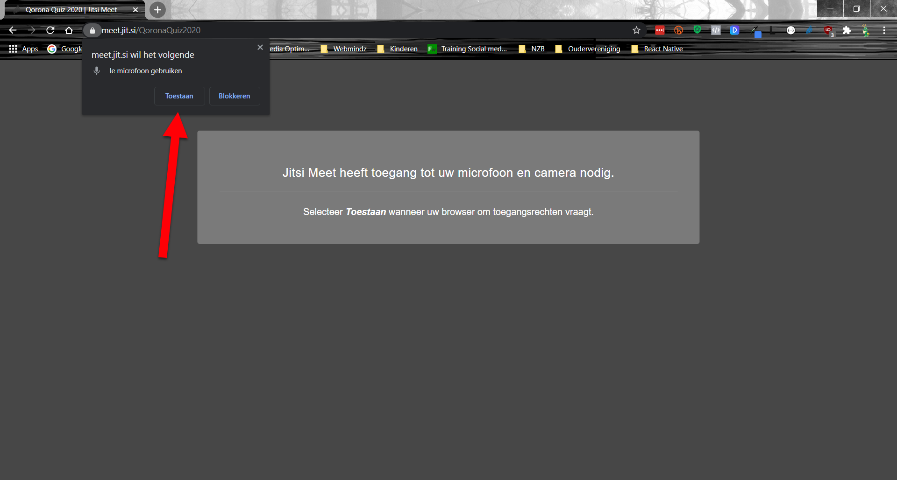
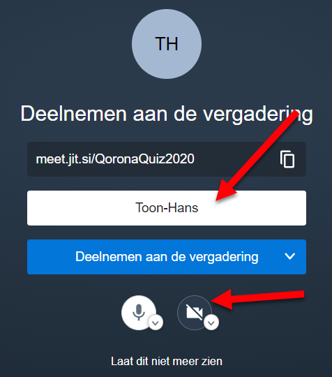

| Uitleg | Voorbeeld |
|---|---|
|
Microfoon toestaan (bovenaan, links) |
 |
|
Geef in het witte veld jouw STRAATNAAM in. (ps: in het voorbeeld staat "Toon-hans").
Het zou superleuk zijn als je ook je webcam aanzet door op het camera-icoon te klikken.
De micro en camera kan je ook tijdens de vergadering nog aan/uit zetten.
|
 |